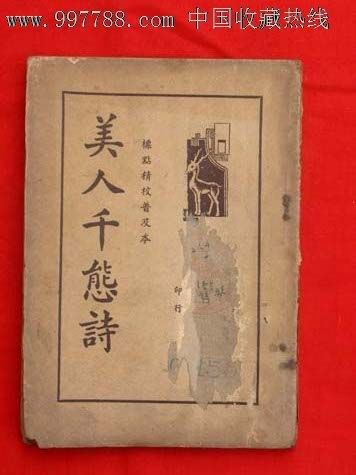

Xiaorong Li, “Beauty without Borders: A Meiji Anthology of Classical Chinese Poems on Beautiful Women”

Xiaorong Li's areas of research are concerned with gender and literary production, women's writings, literati culture, and literary trends in the late imperial period (ca. 1500–1900). She also conducts research on women poets in classical Chinese poetry in Japan and Korea from the sixteenth to the nineteenth centuries. Although her primary focus is on gender issues, she is at pains to situate the study of women within the broader historical and cultural context of the particular era.
Her book, Women’s Poetry of Late Imperial China: Transforming the Inner Chambers, uses the physical, social and symbolic location of women in the gendered division of space— the inner chambers [gui or guige] — as a theoretical focus of an examination of Ming-Qing women's approach to the writing of poetry. The gui serves as a framework for exploring the many ways in which women poets mediated the literary traditions inherited from male writers and confronted the ideological and socio-historical conditions of their time.
In her second book project, she moves on to explore one of the most remarkable achievements in poetic culture during the late imperial period, the production of an unprecedented number and variety of anthologies. She aims to show that the making of poetry anthologies is a productive area to examine the marriage of politics and literary production.
Li was trained in Chinese linguistics first at Peking University and subsequently studied late imperial Chinese literature at McGill University. She taught at Swarthmore College and Beijing Language University (formerly known as Beijing Language Institute) before coming to UCSB.
Xiaorong Li (UCSB)
Sunday, September 29, 2013
Xiaorong Li, “Beauty without Borders: A Meiji Anthology of Classical Chinese Poems on Beautiful Women”
This paper examines an anthology titled 美人千態詩 (A Thousand Manners of Beautiful Women), a collection of poems on 美人 (beauty or beauties) in classical Chinese language and forms by Chinese and Japanese poets. This anthology was initially published in Meiji Japan (preface dated 1892) and reprinted in Shanghai in 1913. What did the re/publication of the anthology involve? What were the historical and cultural conditions that underscored its coming into being? As the title indicates, it is a collection of poems on manners of a beautiful woman. What kind of beauty do the poets write about? Do Chinese and Japanese poets construct different images and concepts of beauty? Do the beautiful women depicted in the anthology have national identities? This anthology provides a specific context in which to investigate the history of cultural interactions between China and Japan, and understand the complicated nature of the discursive community of literary Chinese in premodern East Asia. In this paper, I attempt to closely examine the poems collected by the anthologist and contextualize the making of the anthology in relation to the historical and cultural traditions and trends in Japan and China. In depicting highly similar image and emotive world of certain categories of women, I argue, the anthology reveals a transnational, cultural space that was derived from the poetic tradition of China but went beyond that. Sharing the common language and perspective on women, the poets included in the anthology formed a homogenous discursive venue crossing chronological and national boundaries.